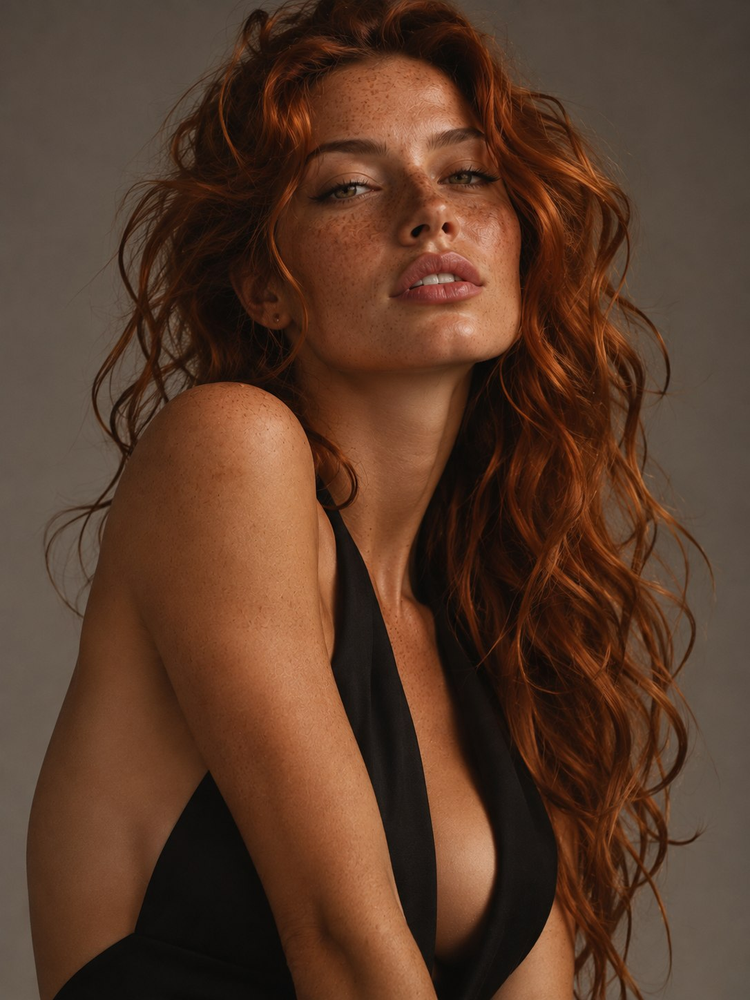
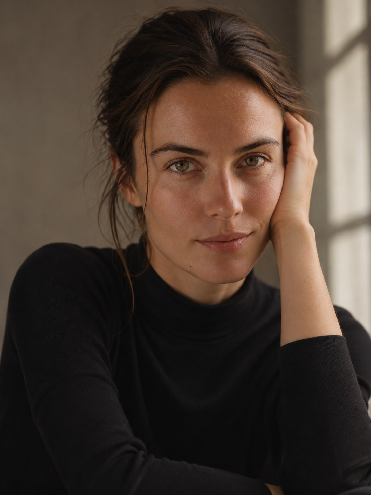
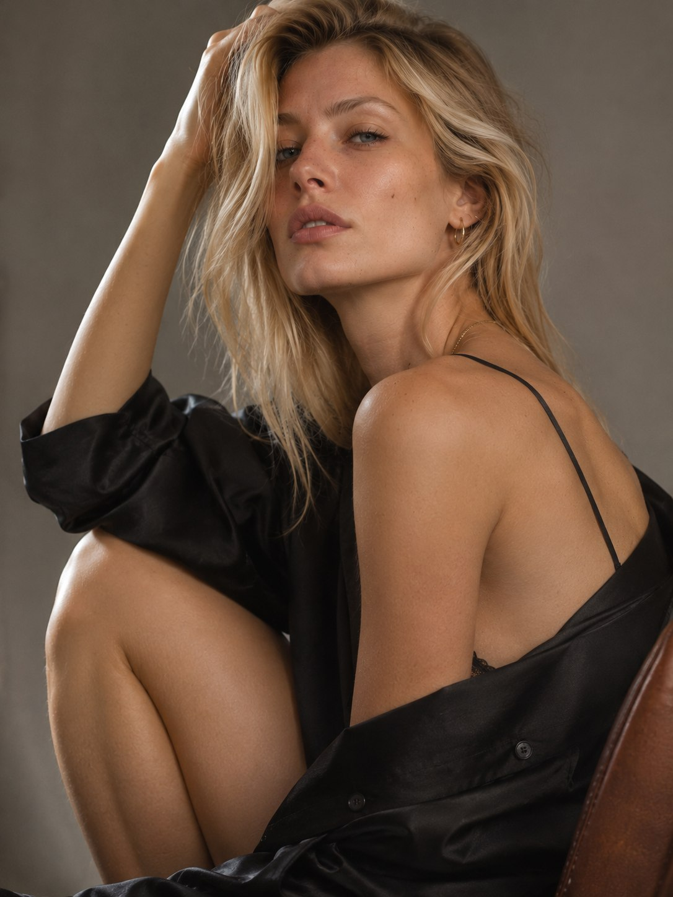

AI fashion film
SESSION 05 — UNPOSED
Three women, a camera and the moments in between. Carefully composed editorial portraits give way to quiet, unguarded moments between takes, revealing beauty, presence and individuality.
Open on YouTube ↗AI Character / Fashion / Lifestyle
Fashion films and travel stories built around a recurring character. The Sessions explore performance, movement and character continuity through generative production and editing.
Explore 8 films ↓WATCH THE WORK
AI fashion film
Three women, a camera and the moments in between. Carefully composed editorial portraits give way to quiet, unguarded moments between takes, revealing beauty, presence and individuality.
Open on YouTube ↗
AI fashion film
Elegance, mystery and quiet confidence meet in a fashion film about appearance and identity. Some things are revealed; others remain hidden.
Open on YouTube ↗
AI fashion film
From New York streets to intimate interiors, an eclectic fashion editorial follows moments of work, play and spontaneity. A new fragment of Valeria’s visual world.
Open on YouTube ↗
AI fashion film
An autumn editorial built around effortless elegance, subtle movement and fleeting moments. A study of fashion, identity and the freedom of having nowhere to be.
Open on YouTube ↗
AI fashion film
Natural light, movement and texture introduce Valeria Satie through intimate cinematic fragments. An editorial in which ordinary moments become a story without words.
Open on YouTube ↗
AI Character
Warm summer nights, fireworks, city spaces and quiet moments by the pool. Valeria moves through the atmosphere of Sant Joan in a cinematic lifestyle short.
Open on YouTube ↗
AI character film
Cold landscapes meet warm interiors, spa settings and geothermal water. Valeria travels through the contrasts of Iceland in a cinematic study of place, character and continuity.
Open on YouTube ↗
AI Character
Valeria moves through Madeira’s dramatic coastlines, water and rock formations. Natural light and warm evening tones shape a cinematic travel editorial.
Open on YouTube ↗PROJECT STILLS & START FRAMES



